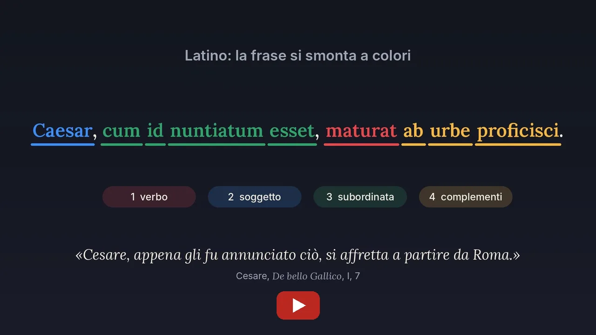

Latino, italiano, storia e metodo di studio, per le medie, il liceo e l’università. Online o in presenza, a Milano, con un docente di lettere di ruolo. Il primo colloquio è gratuito.
Quasi sempre il problema non è l’impegno: è il metodo. Si studia a lungo e si ottiene poco perché manca una procedura da seguire.
Sono docente di lettere di ruolo in un liceo di Milano e dottore di ricerca in filologia romanza; insegno da quindici anni. Ogni settimana preparo e correggo verifiche, versioni e temi, perciò so con precisione in quali punti si perde il voto. Le lezioni partono da lì.
In latino lavoro con un metodo visivo. Ogni frase si smonta a colori: prima il verbo, poi chi compie l’azione, poi le subordinate, una alla volta. Così la traduzione smette di essere un tentativo e diventa una procedura, che si può controllare passo per passo. Il vocabolario si usa alla fine, per scegliere la parola giusta, non per cercare una via d’uscita.
Caesar, cum id nuntiatum esset, maturat ab urbe proficisci.
«Cesare, appena gli fu annunciato ciò, si affretta a partire da Roma» (adattato da Cesare, De bello Gallico, I, 7).
In italiano vale lo stesso principio. Per l’analisi del testo insegno una procedura stabile: parafrasi, struttura, figure, contesto, interpretazione. Va bene per una poesia di Montale come per una pagina di Manzoni, e regge anche alla prima prova della maturità. Per il tema si lavora prima sulla scaletta e sull’argomentazione, perché è lì che si decide la riuscita del testo.

Il metodo in due minuti, su YouTube. La voce del video è sintetica.
Sette percorsi, ognuno con il suo annuncio su Superprof, dove si prenota e si leggono le recensioni.
Traduzione, sintassi e metodo, dal ginnasio alla maturità, fino agli esami universitari. Si parte da una versione corretta e ogni lezione si chiude con una versione da consegnare.
Grammatica, analisi del testo, tema. Per i maturandi, simulazioni di prima prova valutate con la griglia ministeriale e un calendario di preparazione fino a giugno.
Ripetizioni, preparazione di interrogazioni ed esami, impostazione di una tesi, con un dottore di ricerca che lavora anche come storico.
Si parte dal diario e dalle scadenze della settimana. Una parte fissa di ogni incontro è dedicata al metodo: leggere un manuale, prendere appunti, costruire una mappa, preparare un’interrogazione.
Strumenti scelti a partire dal PDP e costruiti insieme allo studente: mappe, testi ad alta leggibilità, supporti audio, il colore per la struttura della frase. Diagnosi e riabilitazione restano ai professionisti sanitari.
Percorsi su misura per professionisti e studenti internazionali: conversazione, lingua dei contesti di lavoro, preparazione alle certificazioni CILS, CELI e PLIDA. Lezioni anche in inglese e in francese.
il primo colloquio, 30 minuti in videochiamata
l’ora, latino, italiano e storia
il pacchetto da 10 ore (140 € quello da 5)
Lezioni di 60 o 90 minuti. La tariffa è la stessa online e in presenza; per le lezioni a domicilio si aggiungono 5 € di spostamento. I pacchetti si pagano in anticipo e si usano con la cadenza che si preferisce; la disdetta è libera fino a 24 ore prima. Le lezioni online si svolgono con una lavagna condivisa, e i materiali restano allo studente.
Non do lezioni private agli studenti delle scuole in cui insegno.
Il modo più semplice è scrivermi dall’annuncio su Superprof della materia che ti interessa: lì si fissa il primo colloquio gratuito e si leggono le recensioni. Si può anche scrivermi direttamente, su WhatsApp o a danilo@daniloaprigliano.it, indicando la classe, la materia e l’ultima verifica.
Altro che appartiene a questa pagina, anche se sta altrove: la formazione dei docenti sull’intelligenza artificiale, i materiali didattici gratuiti da scaricare, il profilo completo e il curriculum.